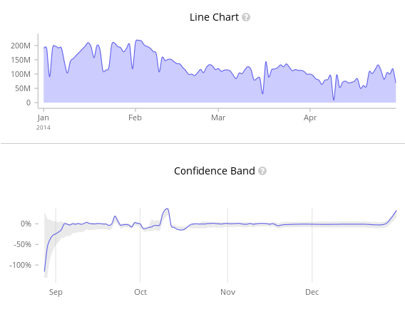
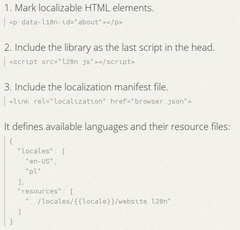

Question?

Mozilla created in the last years many JavaScript libraries that can help you on your dev life and maybe you don't know them.
https://github.com/mozilla/localforage
localforage.setItem(key, value, function() {console.log('Saved: ' + value);});localforage.getItem(key, function(err, readValue) {console.log('Read: ', readValue);});
https://github.com/mozilla/fxpay
https://github.com/mozilla/nunjucks
{% extends "base.html" %}{% asyncAll item in items %}<li>{{ item.id | lookup }}</li>{% endall %}{% block content %}{{ page.content }}{% endblock %}
https://github.com/mozilla/metrics-graphics

http://metricsgraphicsjs.org/examples.htm
https://github.com/mozilla/pdf.js
https://aframe.io/
<a-scene></a-scene>
http://sweetjs.org/
https://github.com/mozilla/vtt.js
http://popcornjs.org/
http://l20n.org/

https://togetherjs.com/
https://github.com/mozilla-b2g/exif-parser
http://mozilla.github.io/shumway/
http://emscripten.org/
https://github.com/kripken/emscripten/wiki/Porting-Examples-and-Demos
https://platform-status.mozilla.org/
https://github.com/webcompat/css-fixme
https://github.com/MozillaSecurity/FuzzManager
https://github.com/MozillaSecurity/funfuzz
https://github.com/MozillaSecurity/funfuzz/tree/master/dom
https://github.com/MozillaSecurity/funfuzz/tree/master/js/jsfunfuzz